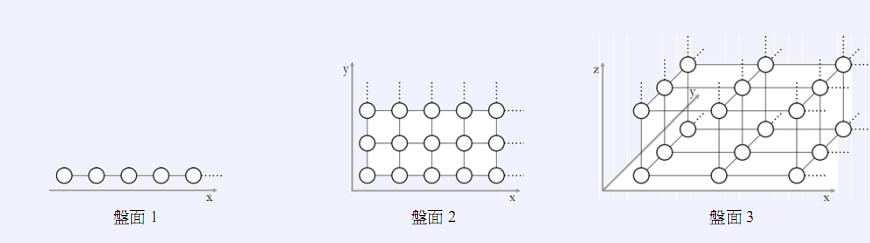

Mirko 和 Slavko 正在玩动物玩具的游戏。 首先，他们要在下图给出的三种玩具模板中选择一种。三种模板分别由一维、二维和三维的网格点（在图中用圆圈表示）组成。

接下来Mirko 把 N 个小动物玩具放到选中的模板的网格点上。
动物玩具可以走一步到达与它相邻的网格点上（在图中相邻的点之间有一条小短线相连）。两个网格点之间的距离定义为从一个网格点到另一个网格点所需要移动的最小步数。
如果两个动物之间的距离小于等于D，则它们之间可以互相听见。Slavko 的任务是计算在模板上有多少对动物可以互相听得见。
任务
给定模板的类型、所有动物的位置以及数字D，写一个程序计算有多少对动物可以互相听得见。
输入的第一行按顺序给出四个整数：
• 模板类型 B (1 ≤ B ≤ 3);
• 玩具动物的数目 N (1 ≤ N ≤ 100 000);
• 动物之间可以互相听得见的最大距离D (1 ≤ D ≤ 100 000 000);
• 模板的大小 M ( 即在输入中允许的最大的坐标值):
当 B=1 时, M 最大是 75 000 000.
当 B=2时, M 最大是 75 000.
当 B=3时, M 最大是 75.
接下来的N 行每行包含B 个整数，整数之间用空格隔开，表示一个动物玩具的坐标。坐标的取值范围是1 到 M ( 包括M )。
每个网格点可以同时包含多个动物玩具。
输出应该包括一个整数，表示可以互相听得见的玩具动物的对数。
注意：使用64 位整数类型计算和输出结果 (在 C/C++ 中用long long, 在Pascal 中用int64 ) 。
评分
在30分的测试数据中, 动物数目 N 最多是 1 000。
如果成功通过了某一种模板（一维、二维或者三维）的全部测试数据，将会得到至少30分。
对于input 1的解释： 假设动物按给出的顺序编号为1到6。4对互相能够听得到的动物分别是:
• 1-5 ( 距离是5)
• 1-6 ( 距离是2)
• 2-3 ( 距离是0)
• 5-6 ( 距离是3)
对于input 2 的解释：8对动物分别是:
• 1-2 ( 距离是2)
• 1-4 ( 距离是4)
• 1-5 ( 距离是3)
• 2-3 ( 距离是3)
• 2-4 ( 距离是4)
• 3-4 ( 距离是3)
• 3-5 ( 距离是4)
• 4-5 ( 距离是3)